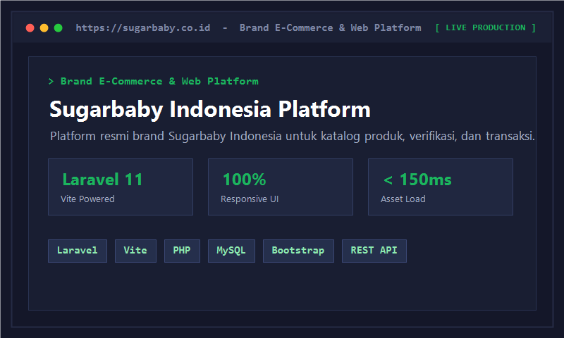
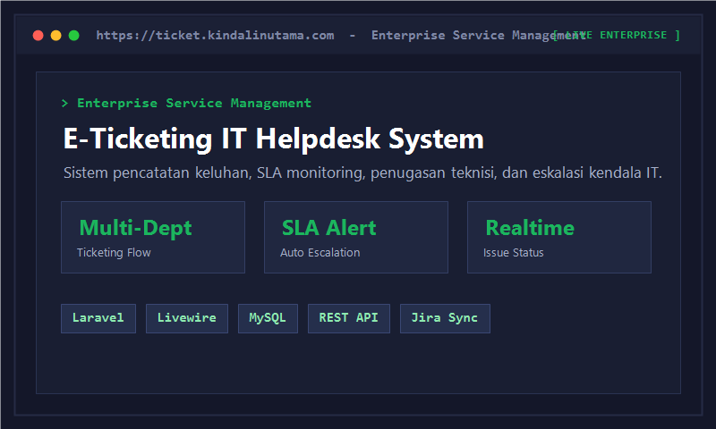
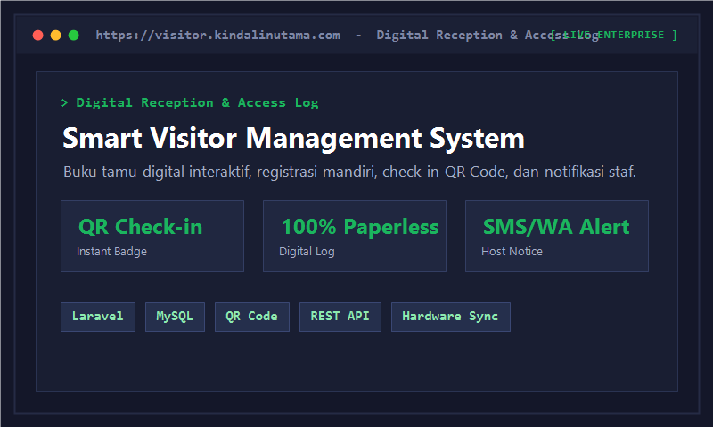
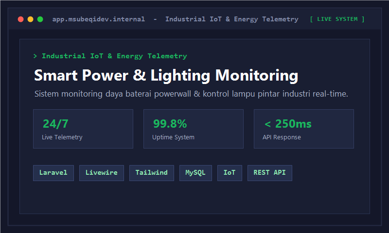
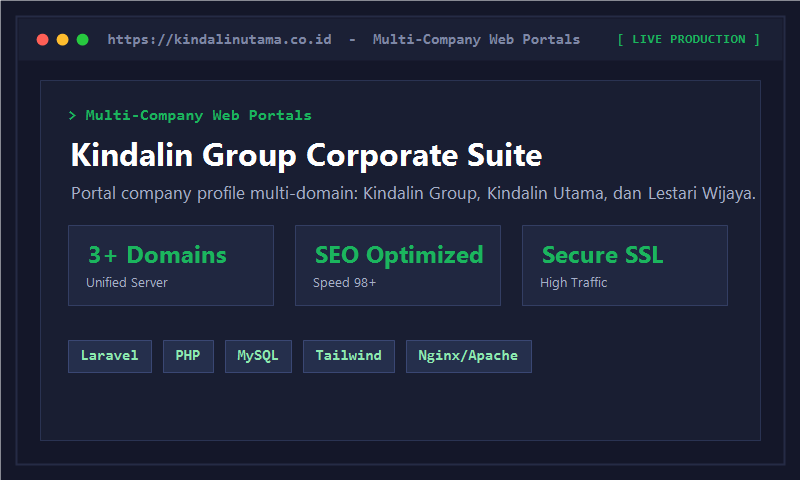
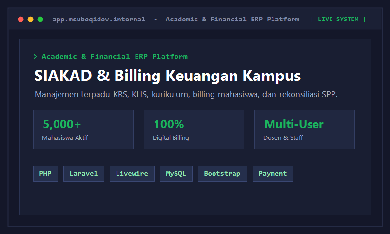
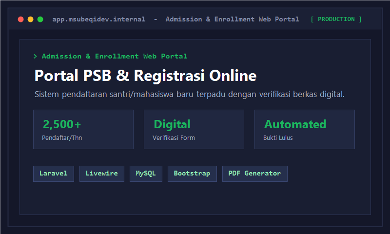
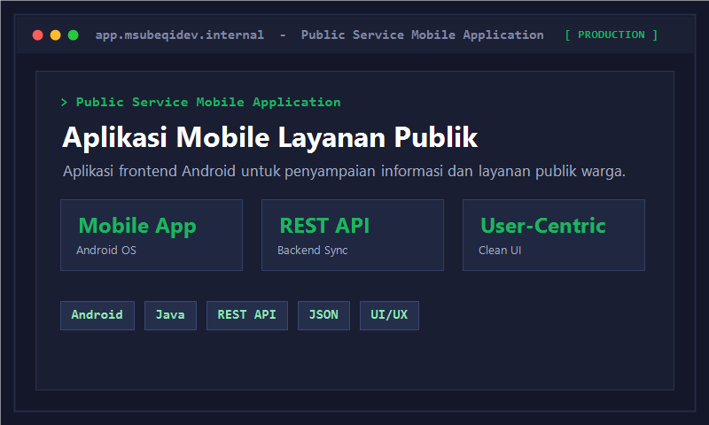

>portfolio.all()
Koleksi Portofolio & Proyek
Daftar proyek aplikasi web produksi, sistem informasi enterprise, platform e-commerce, integrasi IoT, dan mobile yang pernah saya bangun dan kembangkan.

Sugarbaby Indonesia Platform
PT Kindalin Mandiri Utama · sugarbaby.co.id
Platform web resmi brand perlengkapan bayi dan anak terkemuka Sugarbaby Indonesia berbasis Laravel dan Vite. Mengelola katalog produk interaktif, verifikasi keaslian barang, serta sistem promosi digital terpadu.

E-Ticketing IT Helpdesk System
PT Kindalin Mandiri Utama · ticket.kindalinutama.com
Sistem helpdesk internal perusahaan untuk pencatatan tiket kendala, pemantauan SLA perbaikan IT, eskalasi prioritas insiden, dan penugasan teknisi antar-departemen secara terkoordinasi.

Smart Visitor Management System
PT Kindalin Mandiri Utama · visitor.kindalinutama.com
Aplikasi buku tamu digital interaktif untuk registrasi pengunjung mandiri, check-in QR Code, pencatatan rekapitulasi data keamanan kantor, serta notifikasi instan staf yang dikunjungi.

Smart Power & Lighting Monitoring
PT Santinilestari Energi Indonesia · 2024 - Sekarang
Sistem pemantauan telemetri daya baterai powerwall dan otomasi penerangan pintar industri secara real-time. Dilengkapi visualisasi analitik metrik tegangan, arus, suhu, serta notifikasi kendala otomatis.

Kindalin Group Corporate Suite
PT Kindalin Mandiri Utama · kindalingroup.com
Rangkaian situs portal resmi multi-perusahaan mencakup Kindalin Group, Kindalin Utama, dan Lestari Wijaya Abadi. Dibangun dengan fokus performa tinggi, keamanan server, dan optimasi SEO.

SIAKAD & Billing Keuangan Kampus
Institut Agama Islam Dalwa · 2022 - 2024
Platform informasi akademik terpadu melayani ribuan mahasiswa & dosen. Mengelola siklus perkuliahan (KRS, KHS, nilai, kurikulum), billing keuangan mahasiswa, integrasi pembayaran digital, dan cetak transkrip otomatis.

Portal PSB & Registrasi Mahasiswa Baru
Institut Agama Islam Dalwa · 2023
Portal pendaftaran calon santri dan mahasiswa baru online. Mendukung pengisian biodata, upload dan verifikasi berkas digital, seleksi ujian masuk, serta penerbitan bukti kelulusan otomatis berbasis PDF.

Aplikasi Mobile Layanan Publik Kominfo
Dinas Komunikasi & Informatika Kota Surabaya · 2020
Aplikasi mobile frontend Android untuk memfasilitasi penyampaian informasi dan layanan publik pemerintahan bagi warga kota Surabaya, terhubung dengan RESTful API pemerintah kota.